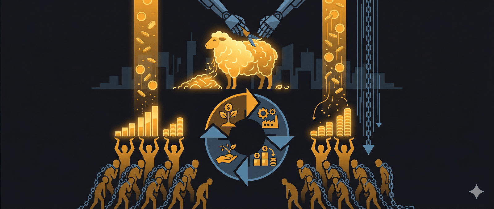

Bạn sẽ bị bóc lột cả đời nếu không hiểu chu kỳ xén lông cừu - Cách mà giới tinh hoa lấy tiền của bạn
- Ai là người đang siết nợ, đuổi họ khỏi những căn nhà mà họ đang ở, đẩy họ vào sự khốn cùng, phải lao động cả đời để trả các khoản nợ?
- Ai là người đẩy mọi thứ lên cao, rồi làm nổ tung mọi thứ, và rồi thì lại mua lại tài sản đó, mua lại cổ phiếu, tài sản của các công ty lâm vào tình cảnh phá sản với mức giá rẻ mạt?
- Đó chính là giới ngân hàng, giới 1% những người đứng đằng sau Nhà nước, họ đã giàu, lại càng giàu hơn. Đó là cuộc chơi của họ, bằng cách bơm thổi và tạo ra chu kỳ, thứ họ thu về là nhà cửa, đất đai, thời gian và sức lao động của những người đứng dưới đáy kim tự tháp, những người không nắm được quy luật, không hiểu được tài chính, họ sẽ phải đi cày thuê cả đời để trả những món nợ đó vì không hiểu về cuộc chơi này. Đó là trò chơi của họ: công cụ lãi suất và dòng tiền chính là cái bẫy khiến đàn cá cắn câu, dòng tiền là công cụ, nó chưa bao giờ là mục đích, đất đai, nhà cửa, sức lao động, thời gian và sự tự do mới là tài sản thật của con người.
- Thế giới quan của bạn sẽ thay đổi khi bạn hiểu rằng Deep State, tức là thế giới ngầm: không có chuyện chia phe chia phái gì cả, tất cả mọi người trong xã hội chỉ được biết những gì mà họ được biết. Giả thuyết đặt ra: tất cả những sự kiện trên đều do một thế lực nào đó tạo ra, ngay cả những sự kiện “Thiên nga đen”
I, Ngày nay thì nhiều người cho rằng, Mỹ đang là bá chủ của thế giới, có quyền uy nhất thế giới, tiếp theo đó là các nước như Nga, Trung Quốc, Đức, Anh, Pháp hay những vị Tổng thống của nước họ là quyền lực nhất nhì thế giới, thế nhưng thực tế thì họ chỉ là những người làm thuê. Nước họ chỉ là một sân chơi cho các đại gia tộc đứng sau. Các đại gia tộc sẽ kiểm soát tài chính, tài nguyên, chính trị, kinh tế và xã hội ở khắp thế giới. Họ có quyền lực thay đổi một thể chế, muốn ai lên làm Tổng thống hay Thủ tướng thì họ có thể sắp xếp.
- Bạn thấy khó tin ư? Thế nhưng bản chất của tất cả các sự kiện tại hơn 190 quốc gia đều tập trung vào 5 chữ sau: Nợ công, Thuế, Lạm phát. Bạn chỉ cần hiểu đúng 5 chữ này là có thể giải thích hết mọi sự kiện kinh tế, chính trị vì sao xảy ra ở nước đó. Hãy cùng nghe tiếp để hiểu về cách mà giới tinh hoa lấy tiền của bạn nhé.
1. Các bước vơ vét tài sản của giới tinh hoa và cách họ tạo ra suy thoái nền kinh tế rất đơn giản. Đầu tiên thì phải hiểu rằng, chi tiêu của người này sẽ là thu nhập của người khác.
- Bước 1: Giới tinh hoa bằng cách thông qua ngân hàng, họ hạ lãi suất cho vay xuống mức thấp nhất để kích thích phát triển kinh tế.
+ Lúc này thì doanh nghiệp, người dân sẽ thế chấp đất đai, nhà cửa, sức lao động trong tương lai vào ngân hàng để mở rộng sản xuất đầu tư.
+ Khi lượng tiền vay để kích thích nền kinh tế đổ vào thị trường, các doanh nghiệp, người dân có vốn, đẩy mạnh sản xuất, đầu tư vào các thị trường. Lúc này thì nền kinh tế phát triển: người dân lao động có việc làm, có tiền ăn tiêu, doanh nghiệp thì có lời và kinh tế thì phát triển.
+ Đây là bước đầu tiên của chu kỳ kinh điển “xén lông cừu”
- Bước 2: Các tài sản thế chấp lên giá và họ có thể tiếp tục vay tiền với lãi suất thấp.
- Bước 3: Khi bong bóng kinh tế ngày càng phình to ra và bắt đầu lạm phát tăng cao, đây là thời kỳ lên đỉnh.
+ Lúc này, ngân hàng bắt đầu tăng lãi suất để tránh lạm phát và bắt các doanh nghiệp cũng như người dân phải trả nợ.
+ Doanh nghiệp bắt đầu không đủ tiền trả nợ, phải bán tháo tài sản, cắt bớt cơ sở hạ tầng, sa thải bớt người dân lao động, tỷ lệ thất nghiệp gia tăng.
+ Người dân không có thu nhập, không trả được thì tuyên bố phá sản, tài sản sẽ bị ngân hàng siết. Người dân cắm nhà, cắm đất không trả nổi thì dùng sức lao động để trả.
- Bước 4: Nền kinh tế bước vào thời kỳ suy thoái.
2. Sau khi lạm phát kết thúc, vòng lặp lại bắt đầu trở lại, ngân hàng sẽ tiếp tục hạ lãi suất. Vòng lặp này thì sẽ không bao giờ kết thúc. Hãy thử xem xét, trong từng giai đoạn lạm phát xảy ra, giá nhà, giá đất đã tăng chóng mặt, chỉ từ 20 năm trước hiện tại đã tăng gấp mấy lần rồi. Do đó, thấy được lạm phát kinh khủng như thế nào. Chỉ trong cái vòng luẩn quẩn của nó mà không hiểu, bạn sẽ là nô lệ mãi mãi. Chỉ những người hiểu quy luật và biết được tương lai mới nắm được các thời kỳ kinh tế và các dấu hiệu khi nền kinh tế bắt đầu chuyển giai đoạn.
II. Với giới tinh hoa, liệu họ có cảm thấy đau lòng không khi đẩy 170.000 gia đình mất nhà cửa tại Mỹ trong cuộc khủng hoảng lớn nhất lịch sử không? Câu trả lời là không. Fed là thủ phạm và họ sẽ tiếp tục điều đó, không bao giờ dừng lại cho tới khi thế giới bị nhét ngập trong USD. Trong tất cả các kịch bản chiến tranh, bệnh dịch, khủng bố đều có mục đích và sắp xếp là đạp nền kinh tế xuống để thu mua tài sản giá rẻ và làm các ngân hàng quốc gia phải vỡ nợ.
1. Ngân hàng lập ra sàn chứng khoán không chỉ để kiểm soát rủi ro nợ mà còn là một công cụ kiếm lời cực tốt. Vậy thì ngân hàng lập sàn chứng khoán để làm những gì?
- Thứ nhất, kiểm soát doanh nghiệp nợ ngân hàng:
+ Khi doanh nghiệp vay nợ lớn, ngân hàng có thể ép họ IPO để huy động vốn trả nợ.
+ Lên sàn thì minh bạch hơn, ngân hàng có thể giám sát tài chính doanh nghiệp dễ dàng hơn. Nếu cổ phiếu tăng, doanh nghiệp gọi vốn mà không cần vay thêm. Nếu cổ phiếu rớt giá, doanh nghiệp vẫn cứ ôm nợ thôi. Bơm tiền cho thổi giá rồi mà còn tụt nữa thì chịu, hết cứu.
- Thứ hai, lợi nhuận kép, vừa giám sát, vừa kiếm tiền.
+ Ngân hàng có thể mua gom cổ phiếu giá rẻ trước IPO, khi lên sàn thì sẽ bán lại với giá cao hơn, chốt lời ngay. Nếu doanh nghiệp phá sản, ngân hàng vẫn thắng vì đã thu được phí bảo lãnh, lãi vay và nhiều khoản phí tài chính khác.
- Thứ ba, sàn chứng khoán là cỗ máy in tiền của ngân hàng.
+ Ngân hàng tạo ra các sản phẩm như margin, repo, pricing,.. tất cả đều là thu phí.
+ Họ kiểm soát dòng tiền lớn, dễ dàng thao túng giá cổ phiếu. Khi thị trường tốt, họ cho vay margin. Khi thị trường xấu, họ siết margin, thu lãi cả hai đầu.
2. Kết luận lại, sàn chứng khoán có thể sập bất cứ lúc nào, nhưng ngân hàng thì luôn thắng, chỉ có những nhà đầu tư nhỏ lẻ là người chơi ván cờ của kẻ khác thôi.
- Nói vui thì luật chơi này giúp ngân hàng luôn thắng, chỉ có những nhà đầu tư nhỏ lẻ là sẽ phải tỉnh táo để không bị cuốn vào ván cờ của người khác.
- Giờ thì bạn đã hiểu vấn đề chưa? Hãy thử liên hệ với một loạt những tỷ phú dỏm thời gian vừa qua nhé. Có rất nhiều người giàu lên nhờ thao túng chứng khoán và rồi trả giá, đã cái kết bóc lịch trong nhà đá. Những vị tỷ phú này chuyên vay vốn, thổi giá, rồi chuồn chuồn.
3. Quá trình “Bơm thổi” trên sàn chứng khoán
- Bước 1: Vay vốn, tạo công ty dỏm triệu USD.
+ Họ vay vốn ngân hàng hoặc các quỹ đầu tư, dùng tiền để mở một công ty với mô hình triển vọng như công nghệ AI, năng lượng tái tạo, thương mại,…
+ Họ không cần sản phẩm thực tế, chỉ cần vẽ được một tương lai sáng lạn, đủ hấp dẫn là được.
- Bước 2: Tạo truyền thông, bơm thổi giá trị.
+ Thuê báo chí, KOL, tung tin về tầm nhìn vĩ đại của công ty.
+ Tổ chức hội nghị gọi vốn cộng đồng, liên tục xuất hiện trên truyền thông như thiên tài đầu tư.
+ Các quỹ đầu tư tham gia sớm, cùng nhau bơm giá trị công ty lên cao.
- Bước 3: Lên sàn chứng khoán, tạo tỷ phú tiền màn hình.
+ Định giá công ty cao gấp nhiều lần giá trị thực tế, IPO với mức giá không tưởng.
+ Cổ phiếu tăng nhờ truyền thông, dòng tiền nhỏ lẻ bắt đầu đổ vào mua.
- Bước 4: Rút tiền ra trước khi bong bóng vỡ.
+ Khi giá cổ phiếu đạt đỉnh, tỷ phú sẽ bán dần cổ phiếu, thu về tiền mặt.
+ Các nhà đầu tư nhỏ lẻ thì vẫn cứ tiếp tục mua vào vì nghĩ rằng giá sẽ còn tăng nữa.
- Bước 5: Bong bóng vỡ, nhà đầu tư bị kẹt lại.
+ Khi công ty không còn tạo ra lợi nhuận thực, niềm tin mất dần, cổ phiếu lao dốc.
+ Tỷ phú thì đã rút hết tiền và rời đi, chỉ còn lại những nhà đầu tư mắc kẹt với đống cổ phiếu vô giá trị.
III. Bất động sản - Cái bẫy kinh tế lớn nhất thế kỷ
- Bạn đã từng một lần nhìn lại giá bất động sản của 20 năm trước ở Việt Nam chưa? Một căn nhà khi đó thì có giá khoảng 500 triệu đồng, bây giờ giá 5 tỷ đồng vẫn chưa chắc đã mua nổi, giá bây giờ và giá của 20 năm trước đã tăng hơn gấp 10 lần. Vậy thì tương lai thì sao?
- Thế nhưng đừng vội nghĩ đất đai quý hiếm nên giá nó tăng nhé, đó chỉ là bề nổi thôi. Thực tế thì đây là một trò chơi kinh tế tinh vi của ngân hàng, doanh nghiệp và người dân. Bất động sản thực ra là trò chơi của những gã khổng lồ. Bất động sản không chỉ đơn giản là mua bán nhà đất. Nó là một công cụ quyền lực để thao túng kinh tế, để rửa tiền và kiểm soát tài sản.
- Giới cầm quyền sẽ định hướng chính sách, phân đất, quyết định số phận của thị trường. Ngân hàng thì bơm tiền, thao túng tín dụng, siết nợ khi cần. Doanh nghiệp bất động sản ôm đất từ trước, thổi giá, bán đỉnh và rửa tiền. Người dân, những người cuối cùng chạy vào mua đất với giá đỉnh rồi ôm nợ cả đời.
- Vì sao giá nhà tăng hơn 10 lần mà người dân vẫn nghèo? Lý do là vì lạm phát.
- Hãy tưởng tượng bạn chơi game mà cứ mỗi năm số tiền bạn kiếm được chỉ tăng có 5%. Nhưng giá vật phẩm trong shop thì tăng giá cả 30%. Bạn cày cuốc cả đời nhưng vẫn không đủ tiền để mua nhà, trong khi dân chơi chỉ cầm tiền ra là có ngay cả một căn biệt thự. Vì tiền của bạn là tiền lương, tiền làm ăn. Còn tiền của họ là tiền tài sản.
- Quy tắc cuộc chơi:
- Nếu bạn có tài sản, có đất, có vàng hay thậm chí là có cổ phiếu thì bạn thắng, bởi vì giá trị tài sản của bạn tăng theo lạm phát.
- Nếu bạn chỉ có tiền mặt và lương tháng thì bạn chắc chắn thua, vì tiền mặt mỗi năm mất giá, mà lương thì nhích lên như rùa bò vậy. Lương không thể tăng kịp theo giá nhà.
- Giấc mơ an cư hóa cơn ác mộng 20 năm về trước: lương 2 triệu, giá nhà 200 triệu. 10 năm tiết kiệm là mua được nhà rồi, giờ lương 15 triệu, nhà 20 tỷ. 111 năm tiết kiệm trong vô vọng.
- Xét cho cùng thì hệ thống này không dành cho bạn, bạn miệt mài làm việc, bạn tiết kiệm từng đồng. Trong khi đại gia và ngân hàng thì ôm đất và nhìn giá nhà tăng gấp 3 lần trong 5 năm. Bạn nghĩ xem, mình cố gắng mua nhà ư? Xin lỗi, bạn chỉ đang đua với lạm phát mà thôi. Nhà giàu thì càng giàu, người nghèo thì mãi nghèo. Vì trò chơi này được thiết kế như vậy đấy. IV. Tương lai bất động sản thì còn tăng hay đã hết game?
- Lý do giá nhà còn tăng mãi, xã hội không thể để giá nhà giảm bởi vì hệ thống tài chính nó dựa vào bất động sản. Dòng tiền từ đại gia, từ ngân hàng, từ quỹ đầu tư vẫn còn đang bơm vào thị trường. - Dân số tăng, đất thì vẫn vậy, cung ít mà cầu nhiều thì giá vẫn lên. Thế nhưng, bản chất của việc bất động sản tăng giá nó cũng không hẳn nằm ở việc người nhiều lên mà đất hữu hạn đâu, đương nhiên điều đó là đúng thôi. Thế nhưng không phải tất cả. Bạn thấy đấy, đất trống ở Hà Nội thì còn nhiều không? Ở các thành phố lớn khác có còn không? Căn hộ chưa bán được, chung cư để không có còn không? Câu trả lời là rất nhiều.
- Trung Quốc thậm chí còn có cả những thành phố ma, xây xong không có người ở vứt đấy, hàng chục ngàn, hàng trăm ngàn căn hộ bỏ trống. Điều cốt yếu là giá nhà, giá đất tăng phi mã hàng chục lần sau vài năm, lý do nó nằm ở lạm phát. Đất là nơi chứa lạm phát, là nơi chứa tiền.
- Điều khiển dòng Tiền - Ai đang lái cuộc chơi?
- Nhà nước và ngân hàng trung ương thì có 3 công cụ thần thánh để điều hướng nền kinh tế:
- Thứ nhất là chính sách tiền tệ: lãi suất, cung tiền và tín dụng.
- Thứ hai là chính sách tài khóa: thuế, đầu tư công và kiểm soát tài sản.
- Thứ ba là quản lý tỷ giá, vàng và ngoại hối: kiểm soát dòng vốn chảy vào, chảy ra.
- Mục đích là lùa tiền vào đâu thì chỗ đó sẽ tăng giá, rút tiền ra ở đâu thì chỗ đó sẽ lập tức lao dốc. Đến cuối cùng thì tiền vẫn nằm trong hệ thống, chỉ không phải là của bạn nữa thôi. Xem người ta chơi như thế nào nhé. Biết cách chơi, biết chạy theo dòng tiền, biết nguồn tiền đổ vào đâu và ra khỏi đâu thì sẽ biết cách để kiếm được tiền. V. Bốn giai đoạn của chu kỳ kinh tế
- Giai đoạn 1: Phục hồi - Chuẩn bị sân khấu.
- Truyền thông sẽ than vãn kinh tế còn khó khăn lắm, còn yếu lắm, nhưng thực ra thì tiền đã được bơm từ từ vào hệ thống qua kênh ngân hàng, trái phiếu, đầu tư công.
- Giữ lãi suất tiết kiệm cao nhưng chưa giảm mạnh lãi suất cho vay, mục đích để người dân còn chịu gửi tiền vào ngân hàng, tạo ra một nguồn vốn lớn.
- Khi hệ thống ngân hàng bắt đầu đầy tiền, sau này muốn bơm tín dụng cũng dễ thôi, mục đích, hút tiền vào ngân hàng trước, chuẩn bị nguồn lực cho giai đoạn bơm tín dụng sau này.
- Giữ ổn định tỷ giá vàng và USD để tránh tiền bị chảy ra ngoài. Kết quả là chứng khoán lúc này chỉ mới có tay to âm thầm gom hàng giá rẻ. Người dân thì chưa có thông tin vì thị trường chưa nóng, còn nguội nên chưa biết để gom. Bất động sản thì vẫn ngủ yên, nhưng dân đầu cơ thì bắt đầu ngó nghiêng. Vàng nhích nhẹ vì người dân còn hơi lo ngại lạm phát. Tiền gửi ngân hàng người dân vẫn gửi nhiều vì lãi suất tiết kiệm hấp dẫn.
- Dấu hiệu nhận biết:
- Chính phủ bắt đầu nói về tín hiệu phục hồi
- Ngân hàng bắt đầu nới lỏng tín dụng âm thầm nhưng chưa công khai
- Nhà đầu tư thì bắt đầu gom tài sản nhưng tin tức thì vẫn còn yên ắng.
- Giai đoạn thứ 2 là tăng trưởng - Bơm tiền và đẩy giá.
- Đầu tiên là truyền thông hô toán lên nền kinh tế đang phục hồi mạnh mẽ, ai không đầu tư bây giờ là bỏ lỡ cơ hội ngàn năm có một.
- Lãi suất cho vay bắt đầu giảm mạnh, ngân hàng đã dễ dãi hơn trong việc cấp tín dụng. Truyền thông bắt đầu tung tin thị trường bùng nổ. Không đầu tư bây giờ là kém, là thiệt, mục đích là dồn tiền từ ngân hàng ra thị trường tài sản.
- Chứng khoán, bất động sản, doanh nghiệp, tạo hiệu ứng FOMO, kéo càng nhiều người vào thị trường càng tốt, kết quả là chứng khoán tăng vèo vèo, nhà nhà mở tài khoản, người người chơi cổ phiếu; bất động sản FOMO bùng nổ, rồi thì cả đất cỏ cũng tăng giá; vàng khi này tạm thời giảm sức hút vì ai ai cũng lao vào chứng khoán, bất động sản hết rồi.
- Tiền gửi ngân hàng giảm mạnh vì người dân rút hết tiền ra đầu tư.
- Dấu hiệu nhận biết: +Ai cũng kiếm được tiền, đến cả bà bán rau, bán bún ngoài chợ cũng bàn về chuyện chứng khoán, tiền ảo.
- Ngân hàng cho vay mua nhà, vay đầu tư dễ như cho kẹo.
- Truyền thông nói rằng đây là cơ hội vàng, không đầu tư là kém.
- Giai đoạn thứ 3: Suy thoái - Thu hồi tiền.
- Lúc này, lãi suất bắt đầu từ từ tăng lên, nhưng báo chí vẫn còn bảo rằng ổn lắm, không chết được ngay đâu, cứ đầu tư đi. Siết tín dụng nhẹ nhàng, không ai nói thẳng, nhưng tự nhiên vay tiền khó hơn.
- Tỷ giá đồng nội tệ bắt đầu căng thẳng, nhà nước phải giữ ngoại hối để bảo vệ tiền tệ, mục đích là giảm thanh khoản từ từ để tránh gây sốc.
- Bắt đầu hút tiền về lại ngân hàng, giảm đầu cơ. Kết quả là chứng khoán thanh khoản kém dần, tin xấu bắt đầu xuất hiện nhiều hơn. Bất động sản xuất hiện cắt lỗ, giao dịch giảm. Vàng bắt đầu tăng trở lại vì người dân lo sợ, rút bớt khỏi thị trường. Tiền gửi ngân hàng đã tăng vì người dân lo sợ rút bớt khỏi thị trường.
- Dấu hiệu nhận biết: Ngân hàng bắt đầu giữ lại tiền, khó vay hơn. Xuất hiện tin rao bán bất động sản cắt lỗ. Doanh nghiệp chứng khoán nói hãy bình tĩnh, thị trường vẫn tốt, hãy mang tiền tới đây và chúng tôi sẽ đưa lợi nhuận cho bạn. Đây là dấu hiệu mà thị trường chuẩn bị lao dốc.
- Giai đoạn thứ 4: Khủng hoảng - Thanh lọc hệ thống.
- Tầm này sẽ tăng mạnh lãi suất, siết chặt dòng tiền. Cấm cửa dòng tiền ra nước ngoài, giữ ngoại hối trong nước, kiểm soát vàng và USD để tránh tháo chạy.
- Mục đích là ổn định hệ thống ngân hàng, cứu nền kinh tế khỏi một cú sập quá nặng, kết quả là chứng khoán sụp đổ, thanh khoản chết lâm sàng. Bất động sản, nhà đầu tư đu đỉnh gồng lỗ, bán rẻ rồi cũng chẳng ai mua. Vàng tiếp tục tăng mạnh vì ai cũng tìm nơi trú ẩn. Tiền gửi ngân hàng lại tăng vì người dân hoảng loạn.
- Dấu hiệu nhận biết: báo chí nói về khủng hoảng toàn cầu, dân xếp hàng rút tiền, vàng khan hiếm. Mục tiêu là ổn định hệ thống tài chính, chuẩn bị cho một chu kỳ mới.
- Bạn đã hiểu chu kỳ kinh tế tài chính của xã hội chưa? Điều quan trọng nhất không phải là bạn đầu tư gì, am hiểu bộ môn gì, mà quan trọng nhất đầu tiên đó phải là bạn hiểu chu kỳ kinh tế, bởi bất kể một loại tài sản nào cũng có chu kỳ, có pha bơm giá, có đỉnh, có đáy và có sụp đổ. Hãy hiểu để tồn tại.
🔍 Phân tích bài viết
📌 Tóm tắt ý chính
Bài viết trình bày một framework âm mưu luận về tài chính: giới ngân hàng/tinh hoa thao túng chu kỳ kinh tế qua công cụ lãi suất và tín dụng để thu hồi tài sản thật (đất, nhà, sức lao động) từ đại chúng. Chu kỳ “xén lông cừu” gồm 4 bước: hạ lãi suất → bơm bong bóng → tăng lãi suất → thu mua tài sản giá rẻ. Bất động sản được phân tích là công cụ chứa lạm phát — ai có tài sản thắng, ai chỉ có lương thua. Kết luận thực dụng: hiểu chu kỳ và đi theo dòng tiền thay vì bị cuốn bởi FOMO.
🗺️ Mindmap
💡 Insight & Góc nhìn đa chiều
Điều bài không nói thẳng — nhưng đúng về cơ chế: Mô tả về chu kỳ tín dụng của bài thực ra khớp với lý thuyết kinh tế chính thống (Minsky Cycle, Austrian Business Cycle). Không cần “âm mưu” để giải thích: các ngân hàng trung ương hạ lãi suất để kích thích tăng trưởng sau suy thoái là phản ứng tự nhiên — hệ quả phụ là tạo bong bóng tài sản, không phải chủ đích thu tài sản người nghèo.
Ai thực sự thắng: Không phải “giới tinh hoa bí ẩn” mà là bất kỳ ai sở hữu tài sản thực trong thời kỳ tiền rẻ — bao gồm cả tầng lớp trung lưu mua nhà trước 2010 ở Hà Nội/HCM. Thắng/thua phụ thuộc nhiều vào timing và khả năng chịu rủi ro, không hoàn toàn vào “hiểu bí mật”.
Xu hướng đang hình thành: Thế hệ trẻ toàn cầu (Gen Z, Millennials) đang ngày càng mất khả năng mua nhà — đây là rủi ro xã hội thực sự, không phải âm mưu mà là hệ quả cấu trúc của chính sách tiền tệ lỏng kéo dài 2010–2022. Hậu quả: bất bình đẳng tài sản tăng, niềm tin vào hệ thống giảm, chủ nghĩa dân túy trỗi dậy.
⚖️ Phản biện
1. Oversimplification nguy hiểm: Gán mọi khủng hoảng cho “âm mưu có chủ đích” bỏ qua yếu tố sai lầm thực sự của chính sách. Fed tăng lãi suất 2022–2023 gây SVB sụp đổ không phải kế hoạch — đó là hậu quả không lường trước của cứu trợ COVID. Không ai “thắng” hoàn toàn trong các cuộc khủng hoảng thực.
2. “Ngân hàng luôn thắng” — không đúng tuyệt đối: Lehman Brothers phá sản 2008. Các ngân hàng Mỹ mất hàng trăm tỷ USD trong khủng hoảng tín dụng dưới chuẩn. Silicon Valley Bank sụp đổ 2023. Hệ thống ngân hàng chia sẻ rủi ro, không phải miễn nhiễm.
3. Giải pháp bài đề ra mơ hồ: “Hiểu chu kỳ và chạy theo dòng tiền” là lời khuyên đúng nhưng không đủ thực tế: thị trường BĐS Việt Nam năm 2022–2023 đã có hàng nghìn người “hiểu chu kỳ” nhưng vẫn kẹt hàng vì thiếu thanh khoản. Timing chính xác chu kỳ là điều ngay cả các quỹ chuyên nghiệp cũng thất bại thường xuyên.
4. Lý thuyết Deep State thiếu bằng chứng: Việc một thế lực bí ẩn điều phối tất cả chính phủ 190 quốc gia là phi thực tế — các nước thường xuyên có lợi ích mâu thuẫn nhau (Nga vs Mỹ, Trung vs Mỹ trong thương mại, bán dẫn).
❓ Câu hỏi mở
- Nếu “ngân hàng luôn thắng nhờ thu tài sản giá rẻ lúc khủng hoảng” — tại sao các ngân hàng Nhật vẫn gánh nợ xấu suốt 30 năm sau bong bóng 1990 và không phục hồi được?
- Ở Việt Nam, với tín dụng ngân hàng nhà nước chiếm đa số — cơ chế “xén lông cừu” có vận hành theo cùng logic hay bị biến tướng khác do yếu tố chính trị?
- Khi crypto/stablecoin và tài sản phi ngân hàng ngày càng phổ biến, liệu chu kỳ truyền thống có bị gián đoạn, hay chỉ di chuyển sang sân chơi mới?
🇻🇳 Liên hệ Việt Nam
Chu kỳ đã diễn ra rõ ở VN: 2020–2021 là đỉnh FOMO bất động sản — đất nền tỉnh lẻ tăng 2–3x, chứng khoán F0 bùng nổ. 2022–2023 là giai đoạn siết tín dụng, trái phiếu doanh nghiệp vỡ nợ (Tân Hoàng Minh, SCB), BĐS thanh khoản cạn kiệt. Đây là bằng chứng thực nghiệm rõ nhất cho mô hình bài viết — nhưng do chính sách điều tiết không nhất quán hơn là “âm mưu có chủ đích”.
Thách thức nhà ở thế hệ trẻ: Lương trung bình Việt Nam ~10–15 triệu/tháng, giá căn hộ HCM trung bình 3–5 tỷ đồng → cần 20–40 năm tiết kiệm không ăn. Đây là vấn đề cấu trúc thực, không cần âm mưu để giải thích.
Cơ hội cho người hiểu chu kỳ ở VN hiện tại (2026): Lãi suất đang ở vùng thấp, tín dụng đang mở rộng trở lại sau siết chặt. Nếu theo logic bài viết, đây là giai đoạn 1–2 (phục hồi/tăng trưởng). Tuy nhiên rủi ro địa chính trị (thuế quan Trump, xuất khẩu chậm) có thể rút ngắn chu kỳ.
📖 Giải thích thuật ngữ
- Chu kỳ xén lông cừu (Sheep Shearing Cycle): Ẩn dụ: người chăn cừu nuôi cừu lớn (kinh tế phát triển) rồi cạo lông (thu tài sản khi khủng hoảng). Không phải thuật ngữ học thuật chính thức — thường dùng trong cộng đồng tài chính thay thế.
- FOMO (Fear of Missing Out): Sợ bỏ lỡ cơ hội — khi thấy ai cũng kiếm được tiền, người chưa đầu tư vội nhảy vào đúng lúc đỉnh.
- Margin (ký quỹ chứng khoán): Vay tiền từ công ty chứng khoán để mua cổ phiếu — khuếch đại lời lẫn lỗ. Khi thị trường giảm, bị “call margin” = buộc bán cổ phiếu bất kể giá.
- IPO (Initial Public Offering): Lần đầu tiên công ty bán cổ phiếu ra công chúng trên sàn. Định giá thường cao hơn giá trị thực tế vì kỳ vọng tương lai.
- Deep State: Khái niệm cho rằng có một tầng lớp quyền lực ẩn (quan chức, ngân hàng, tập đoàn) điều hành thực sự phía sau chính phủ được bầu. Phổ biến trong tư tưởng âm mưu luận.
- Thiên nga đen (Black Swan): Sự kiện hiếm, bất ngờ, tác động lớn — ví dụ: COVID-19, sụp đổ Lehman Brothers. Thuật ngữ của Nassim Taleb.
- Nợ công: Tổng nợ mà chính phủ một nước đang nợ — bao gồm nợ trong nước và nước ngoài. Được dùng để tài trợ chi tiêu vượt thu.